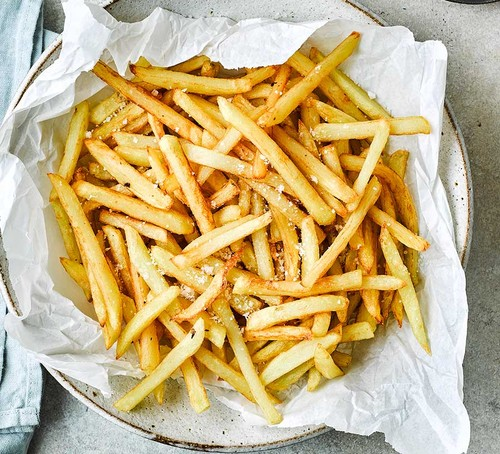

French Fries
⭐⭐⭐⭐⭐ 4.8 Rating | ⏱ 30 Minutes | 🍽 3 Servings
Category
Snack / Fast Food
Difficulty
Easy
Calories
320 kcal
Cooking Style
Deep Fried
📋 Ingredients
- 4 Large Potatoes
- 3 Cups Cooking Oil
- 1 tsp Salt
- ½ tsp Black Pepper
- 1 tsp Chilli Powder (Optional)
- 1 tsp Mixed Herbs
- Tomato Ketchup
- Mayonnaise (Optional)
🍳 Required Utensils
- Knife
- Cutting Board
- Large Bowl
- Deep Frying Pan
- Slotted Spoon
- Kitchen Tissue
- Serving Plate
📖 Introduction
French Fries are one of the most popular snacks around the world. They are made from fresh potatoes cut into strips and deep-fried until golden brown and crispy. They are commonly served with ketchup, mayonnaise, or cheese dip.
🔬 Principle
Potatoes contain starch. Soaking removes excess starch, helping the fries become crispier. Deep frying at the correct temperature cooks the inside while creating a crispy golden exterior.
👨🍳 Procedure
- Wash and peel the potatoes.
- Cut them into thin strips.
- Soak the potato strips in cold water for 20 minutes.
- Drain and dry them using a kitchen towel.
- Heat oil in a deep frying pan.
- Fry the potatoes on medium heat for 5–6 minutes.
- Remove and allow them to cool.
- Increase the oil temperature.
- Fry again until golden brown and crispy.
- Remove excess oil using kitchen tissue.
- Sprinkle salt, pepper, chilli powder, and herbs.
- Serve hot with ketchup or mayonnaise.
⚠ Precautions
- Dry potatoes before frying.
- Do not overcrowd the pan.
- Use hot oil for crispy fries.
- Handle hot oil carefully.
- Serve immediately for best taste.
💡 Chef Tips
- Double fry for extra crispiness.
- Use fresh potatoes.
- Add cheese seasoning for extra flavor.
- Serve with garlic mayonnaise.
- Sprinkle parsley before serving.
🥗 Nutrition Facts
| Nutrient | Amount |
|---|---|
| Calories | 320 kcal |
| Protein | 4 g |
| Carbohydrates | 42 g |
| Fat | 15 g |
| Fiber | 4 g |
🍽 Serving Suggestions
- Serve with tomato ketchup.
- Enjoy with mayonnaise.
- Serve with cheese dip.
- Pair with burgers.
- Enjoy with cold beverages.
🌿 Health Benefits
- Potatoes provide carbohydrates for energy.
- Contain Vitamin C and potassium.
- Homemade fries have fewer preservatives.
- Can be healthier when air-fried.
- Provides quick energy when eaten in moderation.
✅ Result
The prepared French Fries should be crispy on the outside, soft on the inside, evenly golden brown, and well-seasoned. They should be served hot with your favorite dipping sauce for the best taste.
🎥 Watch Recipe Video
Learn the complete recipe by watching the step-by-step video.
▶ Watch on YouTube